Accordion
First Page
This website is about the dream trip to Japan that I always wanted, the first page will be show the accordion, slideshow, and a image map.
Second Page
have included multiple pictures and videos
Third Page
The third page is were you can see various pictures with tranformations, transistions, and filters.
Some of the locations that I want to visit
Areas I want to visit
 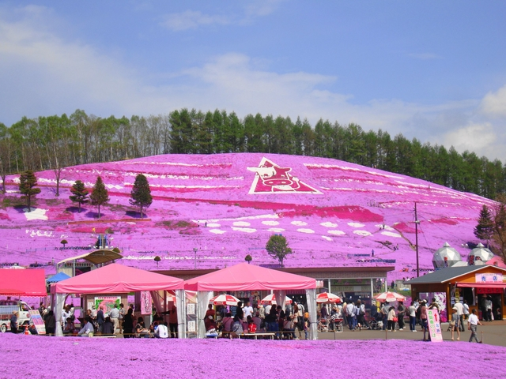
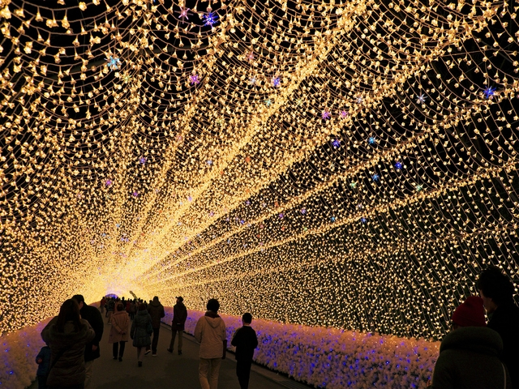
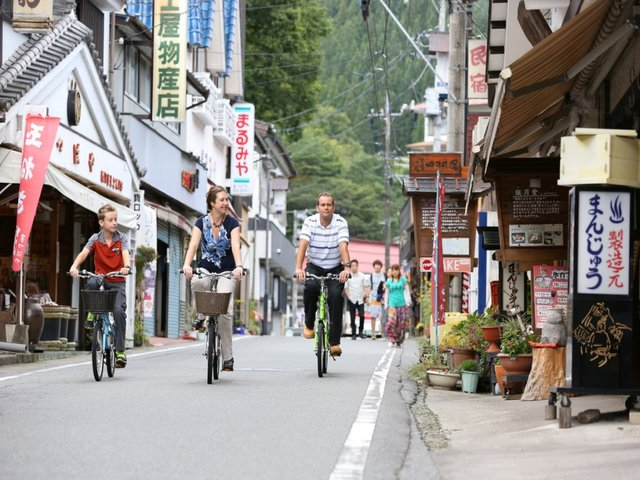
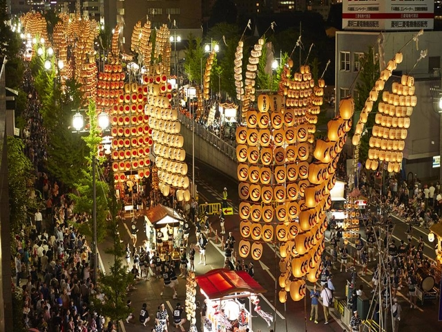
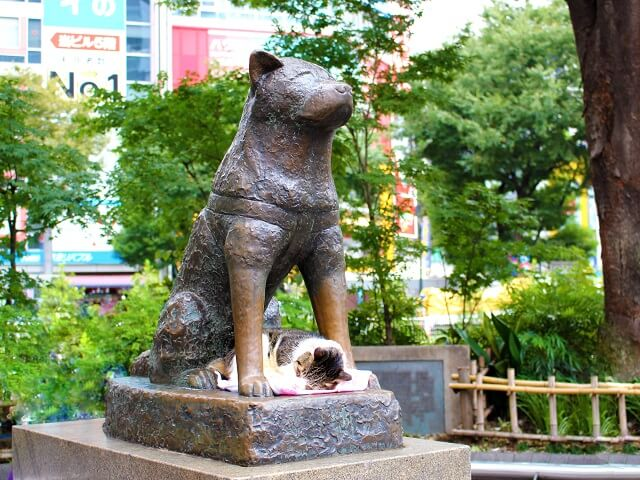
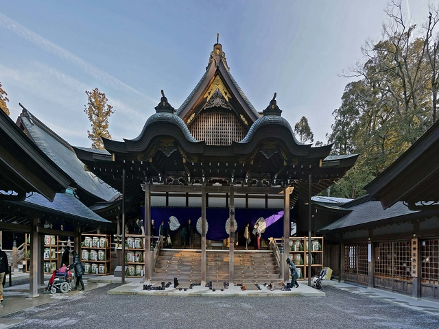
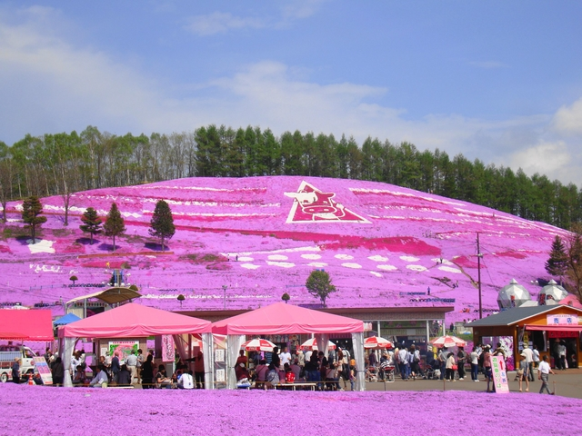
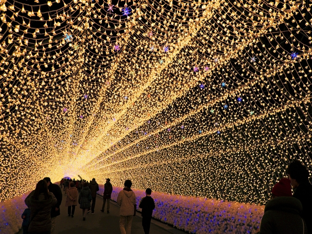
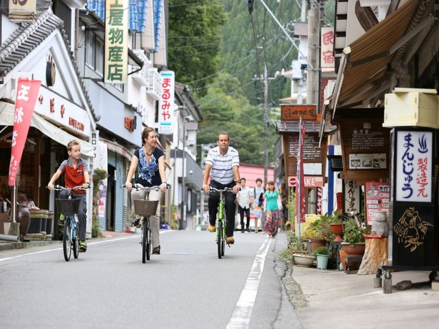
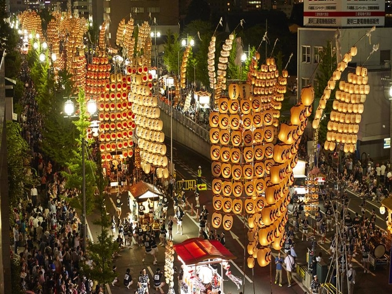
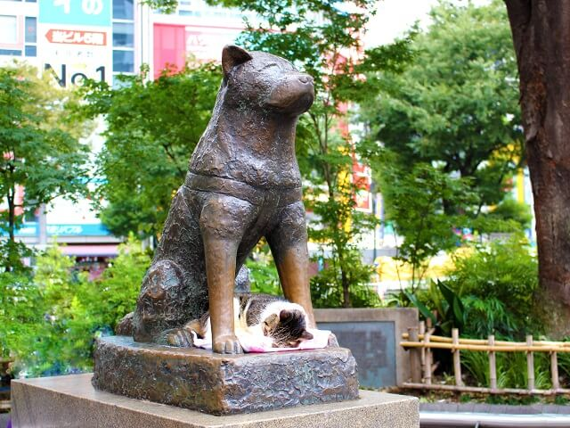
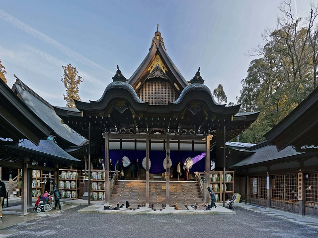
This is a map of Tokyo Prefecture; click over the Tokyo, shinjuku, shibuya, and chichibu-tama-kai National park names to go to informational websites.
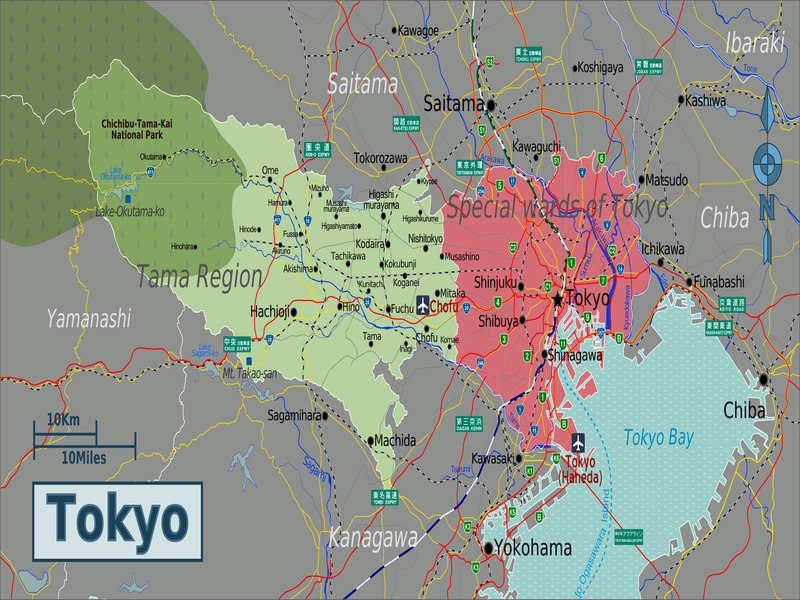